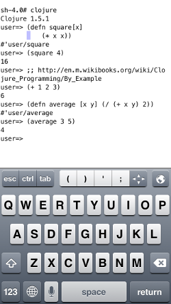

This is a distribution of Rich Hickey's Clojure (1.5.1) Lisp on JVM programming language for IOS on IPad and IPhone. Only requires IOS 5.1.1 or better. This is a console app; we recommend using "Prompt" SSH with a customized keyboard featuring common symbols like parenthesis.

A full on-device OCaml development environment to be released soon on the QMole desktop for Iphone and IPad.
See our Facebook page for details
https://www.facebook.com/qmolelinux

Follow us on Twitter for instant updates!
http://www.Twitter.com/@ChrisKohlhepp